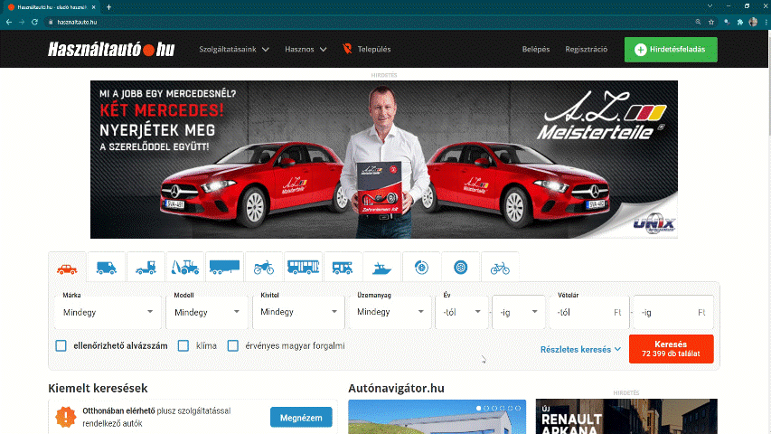
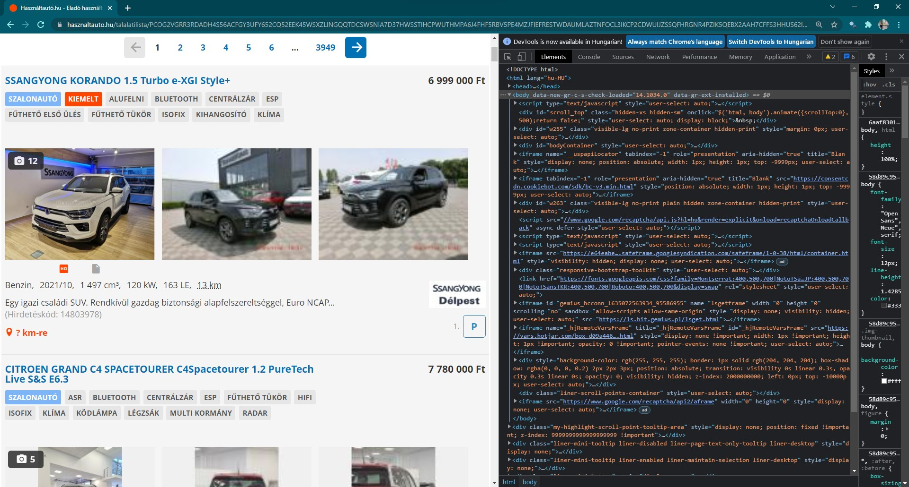
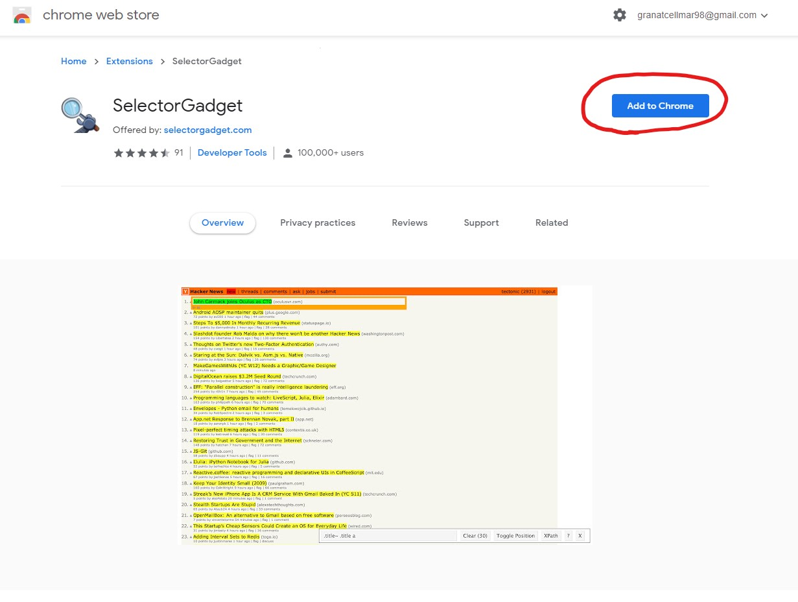
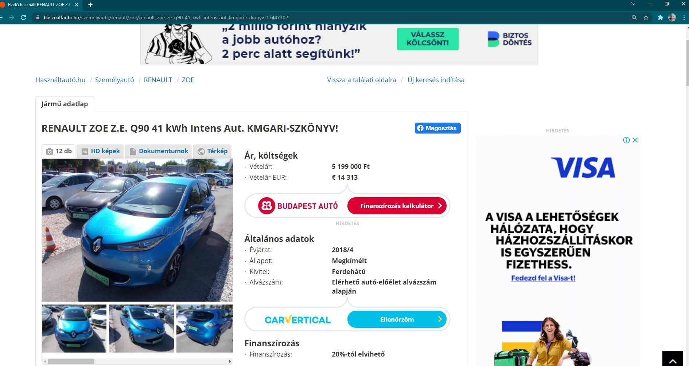

Web scraping
Readings and class materials for Tuesday, October 31, 2023
Nowadays, we manage a very huge part of our life online. This has an important side-effect: we can collect enormous data from the web for our researches. You can access data about shops, blogs, social media etc. The target of this chapter is to give a brief introduction how you can collect this data effectively. We will need a new package for this purpose: rvest
We will scrape the data from hasznaltauto, which is the online second hand car market of Hungary. Lets navigate to the page in our browser and lets click on search.

Now we have to copy and paste the new url from the browser to Rstudio. This will be the first link we want to visit while scraping. Lets assign this url as url in R.
url <- "https://www.hasznaltauto.hu/talalatilista/PCOG2VGRR3RDAD [...]" # long url
The next step is load the website into your R session. This can be done by the read_html function from the rvest package.
page <- read_html(url)
page{html_document}
<html lang="hu-HU">
[1] <head>\n<meta http-equiv="Content-Type" content="text/html; charset=UTF-8 ...
[2] <body>\n <script type="text/javascript">window.dataLayer = window.data ...Naviagtion on the page
Now we can see the webpage as html codes in RStudio. This is the same what you get if you open developer view in your browser.

In the developer view, you can find the information that is relevant to you and select it using the html_nodes function. Alternatively, however, there is a simpler method. Add Selector Gadget to your browser. This add-on helps you find the ID of an item by clicking on it. This way, you can navigate without having web development skills. We can easily install this add-on in chrome and edge, just search for its name and the first hit should be this.

You can activate the add-on from the menu of your browser.
First, find the IDs for the car ads. To do this, first select the name of a specific car and then mark everything you do not want to include. The target is to make every car ads title to yellow or green, but nothing else should be green.

If you have the ID you are looking for, put it in the html_nodes function. The code above selects the ad titles from the page.
my_node <- page %>%
html_nodes(".cim-kontener a")
my_node{xml_nodeset (130)}
[1] <a class="btn hagomb hagomb-nagy parkoloBtn parkolo-nolabel" data-hirkod ...
[2] <a class="" href="https://www.hasznaltauto.hu/szemelyauto/suzuki/vitara/ ...
[3] <a class="" href="https://www.hasznaltauto.hu/szemelyauto/suzuki/vitara/ ...
[4] <a class="btn hagomb hagomb-nagy parkoloBtn parkolo-nolabel" data-hirkod ...
[5] <a class="" href="https://www.hasznaltauto.hu/szemelyauto/opel/astra_l/o ...
[6] <a class="" href="https://www.hasznaltauto.hu/szemelyauto/opel/astra_l/o ...
[7] <a class="btn hagomb hagomb-nagy parkoloBtn parkolo-nolabel" data-hirkod ...
[8] <a class="" href="https://www.hasznaltauto.hu/szemelyauto/nissan/x-trail ...
[9] <a class="" href="https://www.hasznaltauto.hu/szemelyauto/nissan/x-trail ...
[10] <a class="btn hagomb hagomb-nagy parkoloBtn parkolo-nolabel" data-hirkod ...
[11] <a class="" href="https://www.hasznaltauto.hu/szemelyauto/nissan/qashqai ...
[12] <a class="" href="https://www.hasznaltauto.hu/szemelyauto/nissan/qashqai ...
[13] <a class="btn hagomb hagomb-nagy parkoloBtn parkolo-nolabel" data-hirkod ...
[14] <a class="" href="https://www.hasznaltauto.hu/szemelyauto/suzuki/s-cross ...
[15] <a class="" href="https://www.hasznaltauto.hu/szemelyauto/suzuki/s-cross ...
[16] <a class="btn hagomb hagomb-nagy parkoloBtn parkolo-nolabel" data-hirkod ...
[17] <a class="" href="https://www.hasznaltauto.hu/szemelyauto/peugeot/5008/p ...
[18] <a class="" href="https://www.hasznaltauto.hu/szemelyauto/peugeot/5008/p ...
[19] <a class="btn hagomb hagomb-nagy parkoloBtn parkolo-nolabel" data-hirkod ...
[20] <a class="" href="https://www.hasznaltauto.hu/szemelyauto/peugeot/3008/p ...
...But this is still an html_code.If we want to keep the text of the element, we use the html_text function, but if we are interested in the url it points to, we use thehtml_attr function. In the latter case, it is always necessary to specify the href element, ie which web page you are referring to.
[1] "P"
[2] "SUZUKI VITARA 1.4 Hybrid GL+ akár: 2.1 millió ár-előny+0% THM!"
[3] "SUZUKI VITARA 1.4 Hybrid GL+ akár: 2.1 millió ár-előny+0% THM!"
[4] "P"
[5] "OPEL ASTRA L 1.2 T Business Edition"
[6] "OPEL ASTRA L 1.2 T Business Edition"
[7] "P"
[8] "NISSAN X-TRAIL 1.5 VC-T Mild Hybrid Xtronic Acenta FIX 0%THM !"
[9] "NISSAN X-TRAIL 1.5 VC-T Mild Hybrid Xtronic Acenta FIX 0%THM !"
[10] "P"
[11] "NISSAN QASHQAI 1.3 DIG-T Mild Hybrid Tekna X-Tronic FIX 0%THM ! Készletről!"
[12] "NISSAN QASHQAI 1.3 DIG-T Mild Hybrid Tekna X-Tronic FIX 0%THM ! Készletről!"
[13] "P"
[14] "SUZUKI S-CROSS 1.4 Hybrid GL+ akár: 2.1 milliós árelőny + 0% THM!"
[15] "SUZUKI S-CROSS 1.4 Hybrid GL+ akár: 2.1 milliós árelőny + 0% THM!"
[16] "P"
[17] "PEUGEOT 5008 1.2 PureTech Active Pack (7 személyes ) AZONNAL ELVIHETŐ! ÉV VÉGÉIG AKCIÓS 3.3% THM-MEL!"
[18] "PEUGEOT 5008 1.2 PureTech Active Pack (7 személyes ) AZONNAL ELVIHETŐ! ÉV VÉGÉIG AKCIÓS 3.3% THM-MEL!"
[19] "P"
[20] "PEUGEOT 3008 1.2 PureTech Active Pack"
[21] "PEUGEOT 3008 1.2 PureTech Active Pack"
[22] "P"
[23] "MAZDA 6 Sportkombi G194 20th Anniversary - KÉSZLETEN"
[24] "MAZDA 6 Sportkombi G194 20th Anniversary - KÉSZLETEN"
[25] "P"
[26] "OPEL GRANDLAND 1.5 CDTI Business Edition (Automata) hamarosan megérkezik"
[27] "OPEL GRANDLAND 1.5 CDTI Business Edition (Automata) hamarosan megérkezik"
[28] "P"
[29] "KIA SORENTO 1.6 T-GDI PHEV Platinum 4WD (Automata) PLUG IN HYBRID! ÖSSZKERÉK! TÖBB SZÍNBEN AZONNAL!"
[30] "KIA SORENTO 1.6 T-GDI PHEV Platinum 4WD (Automata) PLUG IN HYBRID! ÖSSZKERÉK! TÖBB SZÍNBEN AZONNAL!"
[31] "P"
[32] "PEUGEOT 308 SW 1.6 PureTech PHEV GT EAT8 AZONNAL ELVIHETŐ!"
[33] "PEUGEOT 308 SW 1.6 PureTech PHEV GT EAT8 AZONNAL ELVIHETŐ!"
[34] "P"
[35] "PEUGEOT 208 1.2 PureTech Active Pack EAT8"
[36] "PEUGEOT 208 1.2 PureTech Active Pack EAT8"
[37] "P"
[38] "PEUGEOT RIFTER e-Rifter 50kWh Active Pack KIZÁRÓLAG GYÁRTÁSRENDELÉSBŐL!"
[39] "PEUGEOT RIFTER e-Rifter 50kWh Active Pack KIZÁRÓLAG GYÁRTÁSRENDELÉSBŐL!"
[40] "P"
[41] "SSANGYONG REXTON 2.2 e-XDI Premium 4WD (Automata) (7 személyes ) TESZTAUTÓ!"
[42] "SSANGYONG REXTON 2.2 e-XDI Premium 4WD (Automata) (7 személyes ) TESZTAUTÓ!"
[43] "P"
[44] "OPEL CORSA F 1.2 Edition Akciós modell kimagasló kedvezménnyel!!!"
[45] "OPEL CORSA F 1.2 Edition Akciós modell kimagasló kedvezménnyel!!!"
[46] "P"
[47] "KIA CEE'D Ceed 1.0 T-GDI Silver Magyar. Szervizkönyv. Kamera. Áfás"
[48] "KIA CEE'D Ceed 1.0 T-GDI Silver Magyar. Szervizkönyv. Kamera. Áfás"
[49] "P"
[50] "OPEL CROSSLAND 1.2 T Edition Kiemelt akciós modell !!!"
[51] "OPEL CROSSLAND 1.2 T Edition Kiemelt akciós modell !!!"
[52] "P"
[53] "SSANGYONG KORANDO 1.5 Turbo GDI Clever KÜLÖNBÖZŐ FELSZERELTSÉGEK SZINEK AZONNAL RAKTÁRRÓL!"
[54] "SSANGYONG KORANDO 1.5 Turbo GDI Clever KÜLÖNBÖZŐ FELSZERELTSÉGEK SZINEK AZONNAL RAKTÁRRÓL!"
[55] "P"
[56] "HYUNDAI TUCSON 1.6 T-GDI hybrid Executive Plus (Automata) Készletről azonnal! 230LE Hybrid!"
[57] "HYUNDAI TUCSON 1.6 T-GDI hybrid Executive Plus (Automata) Készletről azonnal! 230LE Hybrid!"
[58] "P"
[59] "MERCEDES-BENZ C 220 T CDI BlueEFFICIENCY Avantgarde AMG LINE!!!HARMANKARDON!!GYÖNYÖRŰ ÁLLAPOT!!"
[60] "MERCEDES-BENZ C 220 T CDI BlueEFFICIENCY Avantgarde AMG LINE!!!HARMANKARDON!!GYÖNYÖRŰ ÁLLAPOT!!"
[61] "P"
[62] "OPEL MOKKA 1.2 T Edition Kiemelt akciós modell utolérhetetlen áron!!!Egyedi lízingakció!!!"
[63] "OPEL MOKKA 1.2 T Edition Kiemelt akciós modell utolérhetetlen áron!!!Egyedi lízingakció!!!"
[64] "P"
[65] "PEUGEOT 408 1.2 PureTech Allure Pack EAT8 TESZTAUTÓ! 2024 FEBRUÁRI ÁTVÉTELLEL!"
[66] "PEUGEOT 408 1.2 PureTech Allure Pack EAT8 TESZTAUTÓ! 2024 FEBRUÁRI ÁTVÉTELLEL!"
[67] "P"
[68] "SSANGYONG TIVOLI 1.5 GDi-T Style ÚJ FORMA. BEVÁLT TARTALOM RENDELJE MEG NÁLUNK AZ ÚJ TIVOLIT!"
[69] "SSANGYONG TIVOLI 1.5 GDi-T Style ÚJ FORMA. BEVÁLT TARTALOM RENDELJE MEG NÁLUNK AZ ÚJ TIVOLIT!"
[70] "P"
[71] "SSANGYONG TORRES 1.5 Turbo GDI Club MEGÉRKEZETT AZ ÚJ TORRES PRÓBÁLJA KI ÉS RENDELJE MEG NÁLUNK!"
[72] "SSANGYONG TORRES 1.5 Turbo GDI Club MEGÉRKEZETT AZ ÚJ TORRES PRÓBÁLJA KI ÉS RENDELJE MEG NÁLUNK!"
[73] "P"
[74] "AUDI A6 ALLROAD 55 TFSI quattro S-tronic EGYEDI SZÍN. BANG&OLUFSEN HIFI !!"
[75] "AUDI A6 ALLROAD 55 TFSI quattro S-tronic EGYEDI SZÍN. BANG&OLUFSEN HIFI !!"
[76] "P"
[77] "MAZDA CX-5 2.5i e-Skyactiv Homura AWD (Automata) NAVI! Márkakereskedésből!"
[78] "MAZDA CX-5 2.5i e-Skyactiv Homura AWD (Automata) NAVI! Márkakereskedésből!"
[79] "P"
[80] "KIA NIRO 1.6 GDI HEV Silver DCT"
[81] "KIA NIRO 1.6 GDI HEV Silver DCT"
[82] "P"
[83] "KIA XCEED 1.5 T-GDI X-Gold Készletről egyedi kedvezménnyel!"
[84] "KIA XCEED 1.5 T-GDI X-Gold Készletről egyedi kedvezménnyel!"
[85] "P"
[86] "SKODA SUPERB 2.0 TDI SCR Style 4x4 DSG Magyarországi!1.tul.!Végig vezetett szervizkönyv!"
[87] "SKODA SUPERB 2.0 TDI SCR Style 4x4 DSG Magyarországi!1.tul.!Végig vezetett szervizkönyv!"
[88] "P"
[89] "SKODA OCTAVIA 2.0 CR TDI Elegance Magyarországi!Kitűnő műszaki állapot!Vezetett szervízkönyv!"
[90] "SKODA OCTAVIA 2.0 CR TDI Elegance Magyarországi!Kitűnő műszaki állapot!Vezetett szervízkönyv!"
[91] "P"
[92] "MERCEDES-BENZ C 160 LED Fényszórók / AGILITY CONTROL futómű / Tolatókamera"
[93] "P"
[94] "MERCEDES-BENZ CLA 200 Progressive 7G-DCT Magyarországi ISP"
[95] "P"
[96] "MERCEDES-BENZ C 180 9G-TRONIC Mild hybrid drive Újszerű. ÁFÁ-s! 9.99%THM"
[97] "P"
[98] "MERCEDES-BENZ GLC 250 d 4Matic 9G-TRONIC 1.tulajd. vezetett szervizk! 9.99%THM"
[99] "P"
[100] "BMW X4 xDrive20d (Automata) Adaptív LED.Msport futómű.Akár 2év Garanciával!"
[101] "P"
[102] "MERCEDES-BENZ A 180 d AMG Line 8G-DCT Mo.-i. Garanciális. ISP 2026.05.-ig. AMG Line. Panoráma tető"
[103] "P"
[104] "BMW 730d xDrive (Automata) Laser világítás.BowersWilkinson.HeadUPDisplay.Panoráma tető.akár 2 év Garanciáva"
[105] "P"
[106] "MERCEDES-AMG A-OSZTÁLY AMG A 35 Magyar!"
[107] "P"
[108] "BMW 330e M Sport (Automata)"
[109] "P"
[110] "MERCEDES-BENZ EQA 250 Gyönyörű állapot. Gyári garancia 9.99%THM"
[111] "P"
[112] "MERCEDES-BENZ GLA 200 d Progressive Line 8G-DCT ÁFÁ-s / Hosszútávú bérleti lehetőség / Kedvező finanszírozási opciók!"
[113] "P"
[114] "MERCEDES-BENZ S 560 4Matic 9G-TRONIC / Áfás / Garanciális / Sérülésmentes / Állófűtés / Iwc Schaffhausen analóg óra"
[115] "P"
[116] "MERCEDES-BENZ GLC 300 de 4Matic 9G-TRONIC Plug-in hybrid ÁFÁ-S/Hosszútávú bérleti lehetőség!/Kedvező EUR alapú finanszírozási lehetőség!"
[117] "P"
[118] "MERCEDES-BENZ GLC 300 de 4Matic 9G-TRONIC Plug-in hybrid ÁFÁ-s/ Hosszútávú bérleti lehetőség/ Kedvező finanszírozási opciók!"
[119] "P"
[120] "MERCEDES-BENZ GLE 350 de 4Matic 9G-TRONIC Plug-in hybrid 1.tulajd. vezetett szervizk. 9.99%THM!"
[121] "P"
[122] "MERCEDES-BENZ GLE 400 d 4Matic 9G-TRONIC ÁFÁ-s/ Garanciális. Integrált szerviz-csomag: 2026.12.hó-ig!"
[123] "P"
[124] "MERCEDES-BENZ S 400 d L 4Matic 9G-TRONIC Nettó ár: 42 511 811 Ft"
[125] "P"
[126] "OPEL CORSA F 1.2 BEST Magyarországon elsőnek forgalomba helyezett! Garanciális gépjármű"
[127] "P"
[128] "SKODA OCTAVIA 1.0 TSI Ambition MAGYARORSZÁGI. 87694 KM. FÉNYEZÉSMENTES KAROSSZÉRIA. 3 ÉV GARANCIA!"
[129] "P"
[130] "HYUNDAI I30 1.6 T-GDi VEZETETT SZERVIZKÖNYV - PANORÁMATETŐ - 186LE - FŰTHETŐ KORMÁNY - 3 ÉV GARANCIA!" Find the link
[1] NA
[2] "https://www.hasznaltauto.hu/szemelyauto/suzuki/vitara/suzuki_vitara_1.4_hybrid_gl_plusz_akar_2.1_millio_ar-elony_plusz_0_thm-18561661#sid=651dab01-0dab-4703-bd70-25ee2ea122e5"
[3] "https://www.hasznaltauto.hu/szemelyauto/suzuki/vitara/suzuki_vitara_1.4_hybrid_gl_plusz_akar_2.1_millio_ar-elony_plusz_0_thm-18561661#sid=651dab01-0dab-4703-bd70-25ee2ea122e5"
[4] NA
[5] "https://www.hasznaltauto.hu/szemelyauto/opel/astra_l/opel_astra_l_1.2_t_business_edition-18643458#sid=651dab01-0dab-4703-bd70-25ee2ea122e5"
[6] "https://www.hasznaltauto.hu/szemelyauto/opel/astra_l/opel_astra_l_1.2_t_business_edition-18643458#sid=651dab01-0dab-4703-bd70-25ee2ea122e5"
[7] NA
[8] "https://www.hasznaltauto.hu/szemelyauto/nissan/x-trail/nissan_x-trail_1.5_vc-t_mild_hybrid_xtronic_acenta_fix_0thm-18677911#sid=651dab01-0dab-4703-bd70-25ee2ea122e5"
[9] "https://www.hasznaltauto.hu/szemelyauto/nissan/x-trail/nissan_x-trail_1.5_vc-t_mild_hybrid_xtronic_acenta_fix_0thm-18677911#sid=651dab01-0dab-4703-bd70-25ee2ea122e5"
[10] NA
[11] "https://www.hasznaltauto.hu/szemelyauto/nissan/qashqai/nissan_qashqai_1.3_dig-t_mild_hybrid_tekna_x-tronic_fix_0thm_keszletrol-18813851#sid=651dab01-0dab-4703-bd70-25ee2ea122e5"
[12] "https://www.hasznaltauto.hu/szemelyauto/nissan/qashqai/nissan_qashqai_1.3_dig-t_mild_hybrid_tekna_x-tronic_fix_0thm_keszletrol-18813851#sid=651dab01-0dab-4703-bd70-25ee2ea122e5"
[13] NA
[14] "https://www.hasznaltauto.hu/szemelyauto/suzuki/s-cross/suzuki_s-cross_1.4_hybrid_gl_plusz_akar_2.1_millios_arelony_plusz_0_thm-19002890#sid=651dab01-0dab-4703-bd70-25ee2ea122e5"
[15] "https://www.hasznaltauto.hu/szemelyauto/suzuki/s-cross/suzuki_s-cross_1.4_hybrid_gl_plusz_akar_2.1_millios_arelony_plusz_0_thm-19002890#sid=651dab01-0dab-4703-bd70-25ee2ea122e5"
[16] NA
[17] "https://www.hasznaltauto.hu/szemelyauto/peugeot/5008/peugeot_5008_1.2_puretech_active_pack_7_szemelyes_azonnal_elviheto_ev_vegeig_akcios_3.3_thm-mel-19047130#sid=651dab01-0dab-4703-bd70-25ee2ea122e5"
[18] "https://www.hasznaltauto.hu/szemelyauto/peugeot/5008/peugeot_5008_1.2_puretech_active_pack_7_szemelyes_azonnal_elviheto_ev_vegeig_akcios_3.3_thm-mel-19047130#sid=651dab01-0dab-4703-bd70-25ee2ea122e5"
[19] NA
[20] "https://www.hasznaltauto.hu/szemelyauto/peugeot/3008/peugeot_3008_1.2_puretech_active_pack-19070070#sid=651dab01-0dab-4703-bd70-25ee2ea122e5"
[21] "https://www.hasznaltauto.hu/szemelyauto/peugeot/3008/peugeot_3008_1.2_puretech_active_pack-19070070#sid=651dab01-0dab-4703-bd70-25ee2ea122e5"
[22] NA
[23] "https://www.hasznaltauto.hu/szemelyauto/mazda/6/mazda_6_sportkombi_g194_20th_anniversary_-_keszleten-19159548#sid=651dab01-0dab-4703-bd70-25ee2ea122e5"
[24] "https://www.hasznaltauto.hu/szemelyauto/mazda/6/mazda_6_sportkombi_g194_20th_anniversary_-_keszleten-19159548#sid=651dab01-0dab-4703-bd70-25ee2ea122e5"
[25] NA
[26] "https://www.hasznaltauto.hu/szemelyauto/opel/grandland/opel_grandland_1.5_cdti_business_edition_automata_hamarosan_megerkezik-19194133#sid=651dab01-0dab-4703-bd70-25ee2ea122e5"
[27] "https://www.hasznaltauto.hu/szemelyauto/opel/grandland/opel_grandland_1.5_cdti_business_edition_automata_hamarosan_megerkezik-19194133#sid=651dab01-0dab-4703-bd70-25ee2ea122e5"
[28] NA
[29] "https://www.hasznaltauto.hu/szemelyauto/kia/sorento/kia_sorento_1.6_t-gdi_phev_platinum_4wd_automata_plug_in_hybrid_osszkerek_tobb_szinben_azonnal-19310379#sid=651dab01-0dab-4703-bd70-25ee2ea122e5"
[30] "https://www.hasznaltauto.hu/szemelyauto/kia/sorento/kia_sorento_1.6_t-gdi_phev_platinum_4wd_automata_plug_in_hybrid_osszkerek_tobb_szinben_azonnal-19310379#sid=651dab01-0dab-4703-bd70-25ee2ea122e5"
[31] NA
[32] "https://www.hasznaltauto.hu/szemelyauto/peugeot/308/peugeot_308_sw_1.6_puretech_phev_gt_eat8_azonnal_elviheto-19354937#sid=651dab01-0dab-4703-bd70-25ee2ea122e5"
[33] "https://www.hasznaltauto.hu/szemelyauto/peugeot/308/peugeot_308_sw_1.6_puretech_phev_gt_eat8_azonnal_elviheto-19354937#sid=651dab01-0dab-4703-bd70-25ee2ea122e5"
[34] NA
[35] "https://www.hasznaltauto.hu/szemelyauto/peugeot/208/peugeot_208_1.2_puretech_active_pack_eat8-19355043#sid=651dab01-0dab-4703-bd70-25ee2ea122e5"
[36] "https://www.hasznaltauto.hu/szemelyauto/peugeot/208/peugeot_208_1.2_puretech_active_pack_eat8-19355043#sid=651dab01-0dab-4703-bd70-25ee2ea122e5"
[37] NA
[38] "https://www.hasznaltauto.hu/szemelyauto/peugeot/rifter/peugeot_rifter_e-rifter_50kwh_active_pack_kizarolag_gyartasrendelesbol-19355087#sid=651dab01-0dab-4703-bd70-25ee2ea122e5"
[39] "https://www.hasznaltauto.hu/szemelyauto/peugeot/rifter/peugeot_rifter_e-rifter_50kwh_active_pack_kizarolag_gyartasrendelesbol-19355087#sid=651dab01-0dab-4703-bd70-25ee2ea122e5"
[40] NA
[41] "https://www.hasznaltauto.hu/szemelyauto/ssangyong/rexton/ssangyong_rexton_2.2_e-xdi_premium_4wd_automata_7_szemelyes_tesztauto-19368594#sid=651dab01-0dab-4703-bd70-25ee2ea122e5"
[42] "https://www.hasznaltauto.hu/szemelyauto/ssangyong/rexton/ssangyong_rexton_2.2_e-xdi_premium_4wd_automata_7_szemelyes_tesztauto-19368594#sid=651dab01-0dab-4703-bd70-25ee2ea122e5"
[43] NA
[44] "https://www.hasznaltauto.hu/szemelyauto/opel/corsa_f/opel_corsa_f_1.2_edition_akcios_modell_kimagaslo_kedvezmennyel-19396681#sid=651dab01-0dab-4703-bd70-25ee2ea122e5"
[45] "https://www.hasznaltauto.hu/szemelyauto/opel/corsa_f/opel_corsa_f_1.2_edition_akcios_modell_kimagaslo_kedvezmennyel-19396681#sid=651dab01-0dab-4703-bd70-25ee2ea122e5"
[46] NA
[47] "https://www.hasznaltauto.hu/szemelyauto/kia/ceed/kia_ceed_ceed_1.0_t-gdi_silver_magyar_szervizkonyv_kamera_afas-19462882#sid=651dab01-0dab-4703-bd70-25ee2ea122e5"
[48] "https://www.hasznaltauto.hu/szemelyauto/kia/ceed/kia_ceed_ceed_1.0_t-gdi_silver_magyar_szervizkonyv_kamera_afas-19462882#sid=651dab01-0dab-4703-bd70-25ee2ea122e5"
[49] NA
[50] "https://www.hasznaltauto.hu/szemelyauto/opel/crossland/opel_crossland_1.2_t_edition_kiemelt_akcios_modell-19469653#sid=651dab01-0dab-4703-bd70-25ee2ea122e5"
[51] "https://www.hasznaltauto.hu/szemelyauto/opel/crossland/opel_crossland_1.2_t_edition_kiemelt_akcios_modell-19469653#sid=651dab01-0dab-4703-bd70-25ee2ea122e5"
[52] NA
[53] "https://www.hasznaltauto.hu/szemelyauto/ssangyong/korando/ssangyong_korando_1.5_turbo_gdi_clever_kulonbozo_felszereltsegek_szinek_azonnal_raktarrol-19665635#sid=651dab01-0dab-4703-bd70-25ee2ea122e5"
[54] "https://www.hasznaltauto.hu/szemelyauto/ssangyong/korando/ssangyong_korando_1.5_turbo_gdi_clever_kulonbozo_felszereltsegek_szinek_azonnal_raktarrol-19665635#sid=651dab01-0dab-4703-bd70-25ee2ea122e5"
[55] NA
[56] "https://www.hasznaltauto.hu/szemelyauto/hyundai/tucson/hyundai_tucson_1.6_t-gdi_hybrid_executive_plus_automata_keszletrol_azonnal_230le_hybrid-19698246#sid=651dab01-0dab-4703-bd70-25ee2ea122e5"
[57] "https://www.hasznaltauto.hu/szemelyauto/hyundai/tucson/hyundai_tucson_1.6_t-gdi_hybrid_executive_plus_automata_keszletrol_azonnal_230le_hybrid-19698246#sid=651dab01-0dab-4703-bd70-25ee2ea122e5"
[58] NA
[59] "https://www.hasznaltauto.hu/szemelyauto/mercedes-benz/c_220/mercedes-benz_c_220_t_cdi_blueefficiency_avantgarde_amg_lineharmankardongyonyoru_allapot-19701156#sid=651dab01-0dab-4703-bd70-25ee2ea122e5"
[60] "https://www.hasznaltauto.hu/szemelyauto/mercedes-benz/c_220/mercedes-benz_c_220_t_cdi_blueefficiency_avantgarde_amg_lineharmankardongyonyoru_allapot-19701156#sid=651dab01-0dab-4703-bd70-25ee2ea122e5"
[61] NA
[62] "https://www.hasznaltauto.hu/szemelyauto/opel/mokka/opel_mokka_1.2_t_edition_kiemelt_akcios_modell_utolerhetetlen_aronegyedi_lizingakcio-19816005#sid=651dab01-0dab-4703-bd70-25ee2ea122e5"
[63] "https://www.hasznaltauto.hu/szemelyauto/opel/mokka/opel_mokka_1.2_t_edition_kiemelt_akcios_modell_utolerhetetlen_aronegyedi_lizingakcio-19816005#sid=651dab01-0dab-4703-bd70-25ee2ea122e5"
[64] NA
[65] "https://www.hasznaltauto.hu/szemelyauto/peugeot/408/peugeot_408_1.2_puretech_allure_pack_eat8_tesztauto_2024_februari_atvetellel-19822407#sid=651dab01-0dab-4703-bd70-25ee2ea122e5"
[66] "https://www.hasznaltauto.hu/szemelyauto/peugeot/408/peugeot_408_1.2_puretech_allure_pack_eat8_tesztauto_2024_februari_atvetellel-19822407#sid=651dab01-0dab-4703-bd70-25ee2ea122e5"
[67] NA
[68] "https://www.hasznaltauto.hu/szemelyauto/ssangyong/tivoli/ssangyong_tivoli_1.5_gdi-t_style_uj_forma_bevalt_tartalom_rendelje_meg_nalunk_az_uj_tivolit-19839434#sid=651dab01-0dab-4703-bd70-25ee2ea122e5"
[69] "https://www.hasznaltauto.hu/szemelyauto/ssangyong/tivoli/ssangyong_tivoli_1.5_gdi-t_style_uj_forma_bevalt_tartalom_rendelje_meg_nalunk_az_uj_tivolit-19839434#sid=651dab01-0dab-4703-bd70-25ee2ea122e5"
[70] NA
[71] "https://www.hasznaltauto.hu/szemelyauto/ssangyong/torres/ssangyong_torres_1.5_turbo_gdi_club_megerkezett_az_uj_torres_probalja_ki_es_rendelje_meg_nalunk-19839893#sid=651dab01-0dab-4703-bd70-25ee2ea122e5"
[72] "https://www.hasznaltauto.hu/szemelyauto/ssangyong/torres/ssangyong_torres_1.5_turbo_gdi_club_megerkezett_az_uj_torres_probalja_ki_es_rendelje_meg_nalunk-19839893#sid=651dab01-0dab-4703-bd70-25ee2ea122e5"
[73] NA
[74] "https://www.hasznaltauto.hu/szemelyauto/audi/a6_allroad/audi_a6_allroad_55_tfsi_quattro_s-tronic_egyedi_szin_bangolufsen_hifi-19853292#sid=651dab01-0dab-4703-bd70-25ee2ea122e5"
[75] "https://www.hasznaltauto.hu/szemelyauto/audi/a6_allroad/audi_a6_allroad_55_tfsi_quattro_s-tronic_egyedi_szin_bangolufsen_hifi-19853292#sid=651dab01-0dab-4703-bd70-25ee2ea122e5"
[76] NA
[77] "https://www.hasznaltauto.hu/szemelyauto/mazda/cx-5/mazda_cx-5_2.5i_e-skyactiv_homura_awd_automata_navi_markakereskedesbol-19887851#sid=651dab01-0dab-4703-bd70-25ee2ea122e5"
[78] "https://www.hasznaltauto.hu/szemelyauto/mazda/cx-5/mazda_cx-5_2.5i_e-skyactiv_homura_awd_automata_navi_markakereskedesbol-19887851#sid=651dab01-0dab-4703-bd70-25ee2ea122e5"
[79] NA
[80] "https://www.hasznaltauto.hu/szemelyauto/kia/niro/kia_niro_1.6_gdi_hev_silver_dct-19893267#sid=651dab01-0dab-4703-bd70-25ee2ea122e5"
[81] "https://www.hasznaltauto.hu/szemelyauto/kia/niro/kia_niro_1.6_gdi_hev_silver_dct-19893267#sid=651dab01-0dab-4703-bd70-25ee2ea122e5"
[82] NA
[83] "https://www.hasznaltauto.hu/szemelyauto/kia/xceed/kia_xceed_1.5_t-gdi_x-gold_keszletrol_egyedi_kedvezmennyel-19957055#sid=651dab01-0dab-4703-bd70-25ee2ea122e5"
[84] "https://www.hasznaltauto.hu/szemelyauto/kia/xceed/kia_xceed_1.5_t-gdi_x-gold_keszletrol_egyedi_kedvezmennyel-19957055#sid=651dab01-0dab-4703-bd70-25ee2ea122e5"
[85] NA
[86] "https://www.hasznaltauto.hu/szemelyauto/skoda/superb/skoda_superb_2.0_tdi_scr_style_4x4_dsg_magyarorszagi1tulvegig_vezetett_szervizkonyv-19974031#sid=651dab01-0dab-4703-bd70-25ee2ea122e5"
[87] "https://www.hasznaltauto.hu/szemelyauto/skoda/superb/skoda_superb_2.0_tdi_scr_style_4x4_dsg_magyarorszagi1tulvegig_vezetett_szervizkonyv-19974031#sid=651dab01-0dab-4703-bd70-25ee2ea122e5"
[88] NA
[89] "https://www.hasznaltauto.hu/szemelyauto/skoda/octavia/skoda_octavia_2.0_cr_tdi_elegance_magyarorszagikituno_muszaki_allapotvezetett_szervizkonyv-19995745#sid=651dab01-0dab-4703-bd70-25ee2ea122e5"
[90] "https://www.hasznaltauto.hu/szemelyauto/skoda/octavia/skoda_octavia_2.0_cr_tdi_elegance_magyarorszagikituno_muszaki_allapotvezetett_szervizkonyv-19995745#sid=651dab01-0dab-4703-bd70-25ee2ea122e5"
[91] NA
[92] "https://www.hasznaltauto.hu/szemelyauto/mercedes-benz/c_160/mercedes-benz_c_160_led_fenyszorok_agility_control_futomu_tolatokamera-19486548#sid=651dab01-0dab-4703-bd70-25ee2ea122e5"
[93] NA
[94] "https://www.hasznaltauto.hu/szemelyauto/mercedes-benz/cla_200/mercedes-benz_cla_200_progressive_7g-dct_magyarorszagi_isp-19997915#sid=651dab01-0dab-4703-bd70-25ee2ea122e5"
[95] NA
[96] "https://www.hasznaltauto.hu/szemelyauto/mercedes-benz/c_180/mercedes-benz_c_180_9g-tronic_mild_hybrid_drive_ujszeru_afa-s_9.99thm-19677410#sid=651dab01-0dab-4703-bd70-25ee2ea122e5"
[97] NA
[98] "https://www.hasznaltauto.hu/szemelyauto/mercedes-benz/glc_250/mercedes-benz_glc_250_d_4matic_9g-tronic_1tulajd_vezetett_szervizk_9.99thm-19720733#sid=651dab01-0dab-4703-bd70-25ee2ea122e5"
[99] NA
[100] "https://www.hasznaltauto.hu/szemelyauto/bmw/x4/bmw_x4_xdrive20d_automata_adaptiv_ledmsport_futomuakar_2ev_garanciaval-19812619#sid=651dab01-0dab-4703-bd70-25ee2ea122e5"
[101] NA
[102] "https://www.hasznaltauto.hu/szemelyauto/mercedes-benz/a_180/mercedes-benz_a_180_d_amg_line_8g-dct_mo-i_garancialis_isp_2026.05-ig_amg_line_panorama_teto-19473288#sid=651dab01-0dab-4703-bd70-25ee2ea122e5"
[103] NA
[104] "https://www.hasznaltauto.hu/szemelyauto/bmw/730/bmw_730d_xdrive_automata_laser_vilagitasbowerswilkinsonheadupdisplaypanorama_tetoakar_2_ev_garanciava-19930412#sid=651dab01-0dab-4703-bd70-25ee2ea122e5"
[105] NA
[106] "https://www.hasznaltauto.hu/szemelyauto/mercedes-amg/a-osztaly/mercedes-amg_a-osztaly_amg_a_35_magyar-20000137#sid=651dab01-0dab-4703-bd70-25ee2ea122e5"
[107] NA
[108] "https://www.hasznaltauto.hu/szemelyauto/bmw/330/bmw_330e_m_sport_automata-19939643#sid=651dab01-0dab-4703-bd70-25ee2ea122e5"
[109] NA
[110] "https://www.hasznaltauto.hu/szemelyauto/mercedes-benz/eqa/mercedes-benz_eqa_250_gyonyoru_allapot_gyari_garancia_9.99thm-19392310#sid=651dab01-0dab-4703-bd70-25ee2ea122e5"
[111] NA
[112] "https://www.hasznaltauto.hu/szemelyauto/mercedes-benz/gla_200/mercedes-benz_gla_200_d_progressive_line_8g-dct_afa-s_hosszutavu_berleti_lehetoseg_kedvezo_finanszirozasi_opciok-19336319#sid=651dab01-0dab-4703-bd70-25ee2ea122e5"
[113] NA
[114] "https://www.hasznaltauto.hu/szemelyauto/mercedes-benz/s_560/mercedes-benz_s_560_4matic_9g-tronic_afas_garancialis_serulesmentes_allofutes_iwc_schaffhausen_analog_ora-19656611#sid=651dab01-0dab-4703-bd70-25ee2ea122e5"
[115] NA
[116] "https://www.hasznaltauto.hu/szemelyauto/mercedes-benz/glc_300/mercedes-benz_glc_300_de_4matic_9g-tronic_plug-in_hybrid_afa-s_hosszutavu_berleti_lehetoseg_kedvezo_eur_alapu_finanszirozasi_lehetoseg-19330101#sid=651dab01-0dab-4703-bd70-25ee2ea122e5"
[117] NA
[118] "https://www.hasznaltauto.hu/szemelyauto/mercedes-benz/glc_300/mercedes-benz_glc_300_de_4matic_9g-tronic_plug-in_hybrid_afa-s_hosszutavu_berleti_lehetoseg_kedvezo_finanszirozasi_opciok-19486938#sid=651dab01-0dab-4703-bd70-25ee2ea122e5"
[119] NA
[120] "https://www.hasznaltauto.hu/szemelyauto/mercedes-benz/gle_350/mercedes-benz_gle_350_de_4matic_9g-tronic_plug-in_hybrid_1tulajd_vezetett_szervizk_9.99thm-19766015#sid=651dab01-0dab-4703-bd70-25ee2ea122e5"
[121] NA
[122] "https://www.hasznaltauto.hu/szemelyauto/mercedes-benz/gle_400/mercedes-benz_gle_400_d_4matic_9g-tronic_afa-s_garancialis_integralt_szerviz-csomag_2026.12ho-ig-19357679#sid=651dab01-0dab-4703-bd70-25ee2ea122e5"
[123] NA
[124] "https://www.hasznaltauto.hu/szemelyauto/mercedes-benz/s_400/mercedes-benz_s_400_d_l_4matic_9g-tronic_netto_ar_42_511_811_ft-19996855#sid=651dab01-0dab-4703-bd70-25ee2ea122e5"
[125] NA
[126] "https://www.hasznaltauto.hu/szemelyauto/opel/corsa_f/opel_corsa_f_1.2_best_magyarorszagon_elsonek_forgalomba_helyezett_garancialis_gepjarmu-20012929#sid=651dab01-0dab-4703-bd70-25ee2ea122e5"
[127] NA
[128] "https://www.hasznaltauto.hu/szemelyauto/skoda/octavia/skoda_octavia_1.0_tsi_ambition_magyarorszagi_87694_km_fenyezesmentes_karosszeria_3_ev_garancia-19849488#sid=651dab01-0dab-4703-bd70-25ee2ea122e5"
[129] NA
[130] "https://www.hasznaltauto.hu/szemelyauto/hyundai/i30/hyundai_i30_1.6_t-gdi_vezetett_szervizkonyv_-_panoramateto_-_186le_-_futheto_kormany_-_3_ev_garancia-19942766#sid=651dab01-0dab-4703-bd70-25ee2ea122e5" We’ve now collected the names of all the ads and the url leading to them from the first page. The next step is to collect this data from all pages. However, downloading info from all sites is a lengthy process. Always try the first few pages first and only download them all if you are sure that your program is running without error.
But how do we download data from multiple pages at once? Let’s see if the url changes when we go to the next page.
If we look at the second page of the results list in the browser, we can see that the link has been expanded with a “/page2” member compared to our previous url address. Continue with “/ page3” on page 3, etc.
This way we can easily generate a vector that contains the links to the first 1, 10, 100, 1000 or even all pages. Lets put these into a data.frame.
url_ending <- str_c("/page", 2:10)
url_ending[1] "/page2" "/page3" "/page4" "/page5" "/page6" "/page7" "/page8"
[8] "/page9" "/page10"url_ending <- c("", url_ending) # nothing to add at the first page
url_ending [1] "" "/page2" "/page3" "/page4" "/page5" "/page6" "/page7"
[8] "/page8" "/page9" "/page10"# A tibble: 10 × 1
url
<chr>
1 https://www.hasznaltauto.hu/talalatilista/PCOG2VGRR3RDADH4S56ACFGY3UFY652CQ5…
2 https://www.hasznaltauto.hu/talalatilista/PCOG2VGRR3RDADH4S56ACFGY3UFY652CQ5…
3 https://www.hasznaltauto.hu/talalatilista/PCOG2VGRR3RDADH4S56ACFGY3UFY652CQ5…
4 https://www.hasznaltauto.hu/talalatilista/PCOG2VGRR3RDADH4S56ACFGY3UFY652CQ5…
5 https://www.hasznaltauto.hu/talalatilista/PCOG2VGRR3RDADH4S56ACFGY3UFY652CQ5…
6 https://www.hasznaltauto.hu/talalatilista/PCOG2VGRR3RDADH4S56ACFGY3UFY652CQ5…
7 https://www.hasznaltauto.hu/talalatilista/PCOG2VGRR3RDADH4S56ACFGY3UFY652CQ5…
8 https://www.hasznaltauto.hu/talalatilista/PCOG2VGRR3RDADH4S56ACFGY3UFY652CQ5…
9 https://www.hasznaltauto.hu/talalatilista/PCOG2VGRR3RDADH4S56ACFGY3UFY652CQ5…
10 https://www.hasznaltauto.hu/talalatilista/PCOG2VGRR3RDADH4S56ACFGY3UFY652CQ5…Taking advantage of the {purr} package, we can load and manipulate entire pages in data frames in a transparent and human-readable (tidy) way.
The second example shows that if we specify only one function as the second input, without “~” and “.”, the first input of map will automatically be the first possible input for the specified function, and then the elements added after the function will follow in order. In the present case, we prepared random samples with 1, 2, and 3 elements, where the expected value of the samples is 10, because the first input of the function rnorm is the number of elements (n) and the second is the expected value (mean).
We will now use the map function inside themutate function, so a list will actually be a column of the original table. The elements of this list will be the web pages that are loaded with the read_html function.
# A tibble: 2 × 2
url page
<chr> <list>
1 https://www.hasznaltauto.hu/talalatilista/PCOG2VGRR3RDADH4S56ACFGY… <xml_dcmn>
2 https://www.hasznaltauto.hu/talalatilista/PCOG2VGRR3RDADH4S56ACFGY… <xml_dcmn>Now let’s insert a nodes column that contains only the required points of the page, and aurl_to_cars column, which is the links extracted from it. Since this is already a computationally intensive step, it is worth saving the result. Save it with the same name so your environment won’t be full of unnecessary variables.
cars_add_df# A tibble: 2 × 5
url page nodes ad_title url_to_cars
<chr> <list> <list> <list> <list>
1 https://www.hasznaltauto.hu/talala… <xml_dcmn> <xml_ndst> <chr> <chr [130]>
2 https://www.hasznaltauto.hu/talala… <xml_dcmn> <xml_ndst> <chr> <chr [40]> From now on, all we need is a column with links and titles, but these are nested. The first cell of the url_to_cars column contains more than a hundred links. This nesting option opens a lot of new doors in the process of data manipulation. Use the unnest function to extract these columns.
# A tibble: 170 × 2
url_to_cars ad_title
<chr> <chr>
1 <NA> P
2 https://www.hasznaltauto.hu/szemelyauto/suzuki/vitara/suzuki_vitara… SUZUKI …
3 https://www.hasznaltauto.hu/szemelyauto/suzuki/vitara/suzuki_vitara… SUZUKI …
4 <NA> P
5 https://www.hasznaltauto.hu/szemelyauto/opel/astra_l/opel_astra_l_1… OPEL AS…
6 https://www.hasznaltauto.hu/szemelyauto/opel/astra_l/opel_astra_l_1… OPEL AS…
7 <NA> P
8 https://www.hasznaltauto.hu/szemelyauto/nissan/x-trail/nissan_x-tra… NISSAN …
9 https://www.hasznaltauto.hu/szemelyauto/nissan/x-trail/nissan_x-tra… NISSAN …
10 <NA> P
# ℹ 160 more rowsWe can see that the nodes selection was not entirely perfect (usually not), as there were no matching elements or duplications left.
But now we can still remove the items that don’t fit here. Fortunately, there is no link behind these, and if all columns are the same, unique1 will be our service.
cars_add_df <- cars_add_df %>%
select(url_to_cars, ad_title) %>%
unnest() %>%
na.omit() %>% # remove rows where url_to_cars is missing (NA)
unique() # delete duplications
cars_add_df# A tibble: 70 × 2
url_to_cars ad_title
<chr> <chr>
1 https://www.hasznaltauto.hu/szemelyauto/suzuki/vitara/suzuki_vitara… SUZUKI …
2 https://www.hasznaltauto.hu/szemelyauto/opel/astra_l/opel_astra_l_1… OPEL AS…
3 https://www.hasznaltauto.hu/szemelyauto/nissan/x-trail/nissan_x-tra… NISSAN …
4 https://www.hasznaltauto.hu/szemelyauto/nissan/qashqai/nissan_qashq… NISSAN …
5 https://www.hasznaltauto.hu/szemelyauto/suzuki/s-cross/suzuki_s-cro… SUZUKI …
6 https://www.hasznaltauto.hu/szemelyauto/peugeot/5008/peugeot_5008_1… PEUGEOT…
7 https://www.hasznaltauto.hu/szemelyauto/peugeot/3008/peugeot_3008_1… PEUGEOT…
8 https://www.hasznaltauto.hu/szemelyauto/mazda/6/mazda_6_sportkombi_… MAZDA 6…
9 https://www.hasznaltauto.hu/szemelyauto/opel/grandland/opel_grandla… OPEL GR…
10 https://www.hasznaltauto.hu/szemelyauto/kia/sorento/kia_sorento_1.6… KIA SOR…
# ℹ 60 more rowsWe now have a ready-made list of available cars and their links. Let’s visit one in the browser to see what’s next.
Data from tables

You can see that the data is tabulated on the page. This is the best option for us, as you don’t have to search for the item ID on the page one by one (as before with the ad title). You can simply apply the html_table function to a loaded page, which collects all the tables on the it.
car_url <- "https://www.hasznaltauto.hu/szemelyauto/suzuki/vitara/suzuki_vitara_1.4_hybrid_gl_plusz_akar_2.1_millio_ar-elony_plusz_0_thm-18561661#sid=662a20d7-dd8c-4ede-965c-8736e82d6024"
info_tables <- read_html(car_url) %>%
html_table(fill = TRUE)
info_tables[[1]]
# A tibble: 44 × 2
`Ár, költségek` `Ár, költségek`
<chr> <chr>
1 "Vételár:" "Ár nélkül"
2 "Általános adatok" "Általános ada…
3 "Átvehető:" "2023."
4 "Évjárat:" "2023"
5 "Állapot:" "Normál"
6 "Kivitel:" "Városi terepj…
7 "Nemzetközi járműelőélet" "Nemzetközi já…
8 "Informálódj az alvázszámról a nemzetközi autó-előélet szolg… "Informálódj a…
9 "Hazai járműelőélet" "Hazai járműel…
10 "Informálódj az alvázszámról a magyarországi autó-előélet sz… "Informálódj a…
# ℹ 34 more rowsWhat is the type of info_tables? Since it collects all the tables it can find from the page, it is a list of data frames.
I will reveal that in some cases we will see that there are multiple tables on a page (certain types of info are taken separately) and we want to avoid an irrelevant single column table causing an error (step 1).
Our goal is to be able to gather all the data about the car into a single two-column table. To join all two column tables (step 3), they must also have the same name (step 2).
info_tables %>%
keep(~ ncol(.) == 2) %>% # keep tables that have 2 columns
map(set_names, "x", "y") %>% # set the names to x and y for each table
bind_rows() # join the tables to one sinle table# A tibble: 44 × 2
x y
<chr> <chr>
1 "Vételár:" "Ár …
2 "Általános adatok" "Ált…
3 "Átvehető:" "202…
4 "Évjárat:" "202…
5 "Állapot:" "Nor…
6 "Kivitel:" "Vár…
7 "Nemzetközi járműelőélet" "Nem…
8 "Informálódj az alvázszámról a nemzetközi autó-előélet szolgáltatás ha… "Inf…
9 "Hazai járműelőélet" "Haz…
10 "Informálódj az alvázszámról a magyarországi autó-előélet szolgáltatás… "Inf…
# ℹ 34 more rowsWe see that this works, the output now is one single table. Lets use this method on all the links. To do this, we need to write a function.
get_data(car_url)# A tibble: 44 × 2
x y
<chr> <chr>
1 "Vételár:" "Ár …
2 "Általános adatok" "Ált…
3 "Átvehető:" "202…
4 "Évjárat:" "202…
5 "Állapot:" "Nor…
6 "Kivitel:" "Vár…
7 "Nemzetközi járműelőélet" "Nem…
8 "Informálódj az alvázszámról a nemzetközi autó-előélet szolgáltatás ha… "Inf…
9 "Hazai járműelőélet" "Haz…
10 "Informálódj az alvázszámról a magyarországi autó-előélet szolgáltatás… "Inf…
# ℹ 34 more rowsThe resulting table can all be collected in a single column of our table. Each cell will be a table that we all collected from a given link.
This can also take a serious amount of time if we want to retrieve data from hundreds of cars at once. You should always use only a few. Use the sample_n function to randomly select a few lines to test if everything works as expected.
cars_add_df %>%
sample_n(size = 3) %>% # remove this line at the end if everything is fine
mutate(
data = map(url_to_cars, get_data)
)# A tibble: 3 × 3
url_to_cars ad_title data
<chr> <chr> <list>
1 https://www.hasznaltauto.hu/szemelyauto/peugeot/5008/peugeo… PEUGEOT… <tibble>
2 https://www.hasznaltauto.hu/szemelyauto/kia/niro/kia_niro_1… KIA NIR… <tibble>
3 https://www.hasznaltauto.hu/szemelyauto/toyota/auris/toyota… TOYOTA … <tibble>Currently, our small table is also nested in a cell. Expand it!
cars_add_df %>%
sample_n(size = 3) %>% # remove this line at the end if everything is fine
mutate(
data = map(url_to_cars, get_data)
) %>%
unnest()# A tibble: 107 × 4
url_to_cars ad_title x y
<chr> <chr> <chr> <chr>
1 https://www.hasznaltauto.hu/szemelyauto/peugeot/3008/pe… PEUGEOT… "Ala… "9 8…
2 https://www.hasznaltauto.hu/szemelyauto/peugeot/3008/pe… PEUGEOT… "Ext… "11 …
3 https://www.hasznaltauto.hu/szemelyauto/peugeot/3008/pe… PEUGEOT… "Akc… "9 8…
4 https://www.hasznaltauto.hu/szemelyauto/peugeot/3008/pe… PEUGEOT… "Akc… "Érd…
5 https://www.hasznaltauto.hu/szemelyauto/peugeot/3008/pe… PEUGEOT… "Vét… "€ 2…
6 https://www.hasznaltauto.hu/szemelyauto/peugeot/3008/pe… PEUGEOT… "Fin… "Fin…
7 https://www.hasznaltauto.hu/szemelyauto/peugeot/3008/pe… PEUGEOT… "Ált… "Ált…
8 https://www.hasznaltauto.hu/szemelyauto/peugeot/3008/pe… PEUGEOT… "Átv… "202…
9 https://www.hasznaltauto.hu/szemelyauto/peugeot/3008/pe… PEUGEOT… "Fut… "Új …
10 https://www.hasznaltauto.hu/szemelyauto/peugeot/3008/pe… PEUGEOT… "Évj… "202…
# ℹ 97 more rowsNow that we have a lot of rows instead of 3, the url in the first row is repeated as many times as the number of rows in the table next to it so far.
Since the x column now has the variable name and the y column has the value of the variable, we need another super useful function we’ve seen before: pivot_wider!
cars_add_df %>%
sample_n(size = 3) %>% # remove this line at the end if everything is fine
mutate(
data = map(url_to_cars, get_data)
) %>%
unnest() %>%
pivot_wider(names_from = "x", values_from = "y")# A tibble: 3 × 55
url_to_cars ad_title `Alaptípus ára:` `Extrákkal növelt ár:` `Akciós ár:`
<chr> <chr> <chr> <chr> <chr>
1 https://www.has… PEUGEOT… 9 840 000 Ft 11 700 000 Ft 9 840 000 Ft
2 https://www.has… MERCEDE… <NA> <NA> <NA>
3 https://www.has… MERCEDE… <NA> <NA> <NA>
# ℹ 50 more variables: `Akció feltételei:` <chr>, `Vételár EUR:` <chr>,
# `Finanszírozás kalkulátor \n \n \n \n \n \n HIRDETÉS` <chr>,
# `Általános adatok` <chr>, `Átvehető:` <chr>, `Futásidő:` <chr>,
# `Évjárat:` <chr>, `Állapot:` <chr>, `Kivitel:` <chr>,
# `Nemzetközi járműelőélet` <chr>,
# `Informálódj az alvázszámról a nemzetközi autó-előélet szolgáltatás használatához! \n \n \n \n Előélet lekérdezése` <chr>,
# `Hazai járműelőélet` <chr>, …The last thing that causes this headache for this task is the special characters used in the Hungarian language. The janitor, on the other hand, handles this smoothly as well.
We can now download all the cars if we wish!
cars_data_df <- cars_add_df %>%
mutate(
data = map(url_to_cars, get_data)
) %>%
unnest() %>%
pivot_wider(names_from = "x", values_from = "y") %>%
janitor::clean_names()Footnotes
You can also use it on lists and vectors.↩︎